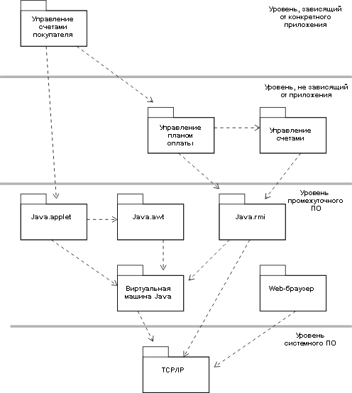

|
Определение возможностей многократного использования
|
Назначение
|
Для определения возможности многократного применения существующих подсистем и/или компонентов на основании
их интерфейсов.
|
Выполните поиск существующих подсистем или компонентов с похожими интерфейсами. Сравните обнаруженные интерфейсы
с интерфейсами, предоставляемыми существующими подсистемами или компонентами. Обычно не бывает точного совпадения,
однако можно обнаружить приблизительное совпадение. Сначала выполняйте поиск похожих алгоритмов и возвращаемых
значений, а затем рассматривайте параметры.
Измените найденные интерфейсы для увеличения совпадения. Может существовать возможность внести небольшие
изменения в интерфейс, которые увеличат его соответствие существующему интерфейсу. В число простых изменений входит
перестройка или добавление параметров и последующий факторинг интерфейса путем его разбиения на несколько интерфейсов,
один или несколько из которых соответствуют интерфейсу существующего компонента, с "новыми" алгоритмами, размещенными в
отдельном интерфейсе.
Замените найденные интерфейсы существующими интерфейсами там, где обнаружено точное совпадение. После упрощения
и факторинга, если имеется точное совпадение с существующим интерфейсом, отбросьте найденный интерфейс и просто
используйте существующий.
Отобразите подсистему-кандидата на существующие компоненты. Выполните поиск существующих компонентов и набора
подсистем-кандидатов. Разложите подсистемы таким образом, чтобы там, где возможно, применялись существующие компоненты
для удовлетворения требуемого алгоритма работы системы. Там где подсистема-кандидат может быть реализована существующим
компонентом, создайте трассируемость между подсистемой проектирования и компонентом в модели реализации.
При отображении подсистем на компоненты многократного применения примите во внимание механизмы проектирования,
связанные с подсистемой; требования к производительности или защите могут сделать компонент непригодным для
многократного применения, несмотря на хорошее совпадение сигнатур операций.
|
Обратное проектирование компонентов и баз данных
|
Назначение
|
Для включения элементов модели с возможностью многократного применения из других проектов, внешних
источников или предыдущих итераций.
|
Существующий код и определения баз данных можно 'извлечь' из предыдущих проектов или итераций и сделать их доступными
для текущего проекта/итерации. Используя потенциальные возможности многократного применения в качестве фильтра, работа,
выполняемая методом обратного проектирования, может быть сосредоточена на тех компонентах, которые можно повторно
применить в текущей итерации.
Обратное проектирование компонентов
В организациях, создающих похожие системы, часто существует набор стандартных компонентов, которые обеспечивают
архитектурные механизмы, необходимые для новой системы. Также могут существовать компоненты, доступные на рынке,
которые также предоставляют эти архитектурные механизмы. Следует изучить существующие компоненты, для того чтобы
определить их пригодность и совместимость в рамках архитектуры программного обеспечения.
Существующие компоненты, либо разработанные в предыдущих итерациях и еще не включенные в модель проектирования, либо
приобретенные компоненты, следует подвергнуть обратному анализу и включить в модель проектирования. В модели
проектирования такие компоненты обычно представлены в виде подсистемы с одним или несколькими интерфейсами.
Обратное проектирование баз данных
Базы данных и содержащиеся в них данные представляют собой один из наиболее важных источников ресурсов многократного
применения. Для повторного применения неявных определений классов, включенных в существующие базы данных, определите,
какая информация, применяемая приложением, уже находится в существующих базах данных. Выполните обратный анализ набора
классов для представление структур баз данных, содержащих эту информацию. Одновременно создайте отображение между
представлением классов приложения и структурами, применяемыми в базе данных. Дополнительная информация по обратному
анализу баз данных приведена в разделе Рекомендации по рабочему продукту: Обратный анализ реляционных баз данных.
Дополнительная информация по отображению между классами и таблицами в реляционной базе данных приведена в разделе Руководство по рабочему продукту: Модель данных.
|
Обновите организацию модели проектирования
|
Назначение
|
Для определения новых элементов модели в организации модели проектирования.
Для изменения баланса структуры модели проектирования, если необходимо.
|
После добавления новых элементов в модель проектирования часто требуется повторная создание пакетов элементов.
Повторное создание пакетов имеет несколько целей: уменьшается связность между пакетами и улучшается сцепление в
пределах пакетов в модели проектирования. Основной целью является обеспечение возможности проектирования и разработки
различных пакетов (и подсистем) независимо друг от друга различными сотрудниками или группами. В то время как полной
независимости достичь, вероятно, невозможно, освобождение связей между пакетами облегчает разработку крупных или
сложных систем.
'Плоская' структура модели (в которой все пакеты и подсистемы находятся на одном и том же концептуальном уровне
системы) подходит для небольшой системы; для более крупных систем требуется дополнительный инструмент выделения
структуры, который называется 'разделение на уровни' (см. раздел Руководство по рабочему
продукту: Разделение на уровни). Правила разделения на уровни определяют ограничения на разрешенные отношения между
определенными типами пакетов. Эти правила распознают, что определенные зависимости не должны существовать:
функциональность приложения не должна напрямую зависеть от определенной операционной системы или оконных служб системы
- должен существовать промежуточный уровень, содержащий логическую операционную систему и службы окон, который отделяет
функциональность приложения от изменений в службах реализации низкого уровня. Разделение на уровни предоставляет способ
снижения воздействия изменений: устанавливая правила, которые ограничивают зависимости между пакетами и подсистемами,
снижая степень связности между пакетами и подсистемами, при этом система становится более устойчивой. Это допускает
внесение изменений.
После добавления новых элементов в систему существующие пакеты могут стать слишком крупными, для того чтобы ими могла
управлять одна группа: такой пакет следует разделить на несколько пакетов, имеющих сильную связь внутри пакетов и со
слабой связностью между пакетами. Это может быть трудной задачей - может оказаться сложным поместить некоторые элементы
в один определенный пакет, поскольку они используются элементами в обоих пакетах. Существует два возможных решения:
разделить элемент на несколько объектов, по одному в каждом пакете (это возможно, если элемент имеет несколько
'персоналий', или набор непересекающихся ответственностей), либо переместить элемент в пакет в нижележащем уровне,
тогда элементы вышележащего уровня могут зависеть от него в одинаковой степени.
По мере увеличения сложности системы потребуется больше уровней, для того чтобы обеспечить управляемую и осознаваемую
структуру. Однако, наличие более 7-10 уровней является необычным даже в самых больших системах, поскольку с увеличением
числа уровней возрастает сложность и снижается возможность осознания системы.
Ниже приведен пример разделения на уровни, включая уровни промежуточного ПО и программного обеспечения системы:

Пример разделения пакетов на уровни для приложения на Java/Web-приложения. Примечание: зависимости от пакета TCP/IP
обычно не моделируются явным образом, поскольку применения служб TCP/IP встроено в Java VM, java.rmi и Web-браузер.
Здесь они изображены только в качестве иллюстрации.
Присвоение ответственностей отдельным сотрудникам и группам для подсистем и уровней. За каждый пакет или подсистему
должен отвечать отдельный сотрудник (если их область мала) либо группа (в случае широкой области).
|
Обновите логическое представление
|
Если проектирование классов, пакетов и подсистем (элементов модели) является важным с точки зрения архитектуры, то их
следует включить в раздел Логическое представление Рабочего продукта: Документ архитектуры программного обеспечения. Это
позволит гарантировать, что о новых архитектурно значимых элементы модели будет сообщено остальным членам коллектива
проекта.
Кроме этого, роль архитектора программного обеспечения работает совместно с ролью инженера процесса для предоставления
подробных рекомендаций для проектировщиков и ответственных за реализацию по вопросам применения новых включенных
элементов проектирования.
|
|